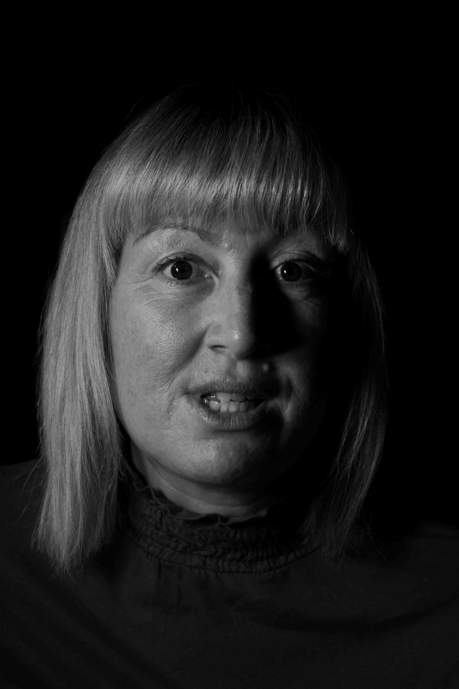
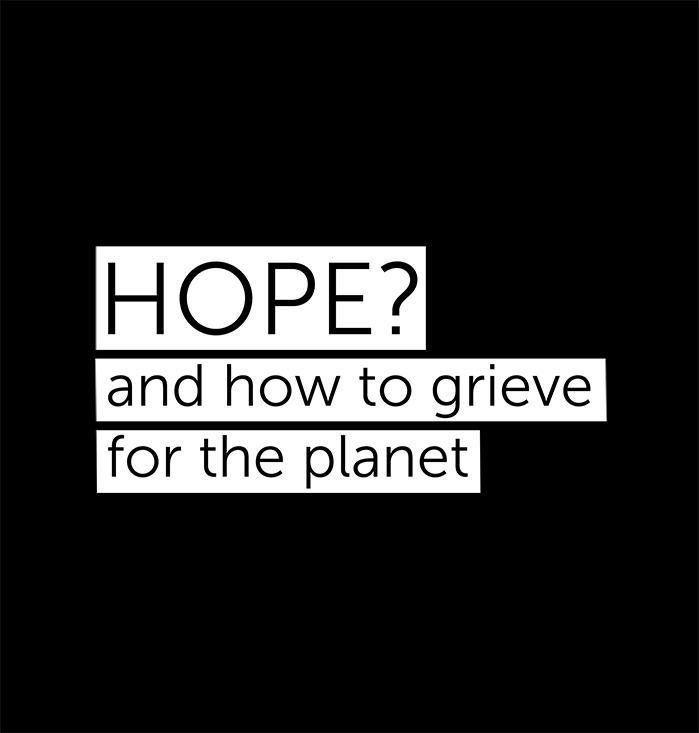

Listen to this page:
Emma is an ecologist and environmental activist who has been arrested by UK police several times for attempting to highlight the severity of the climate crisis and the seriousness of state inaction. She spent two months in prison for climate activism during which time she undertook a 26 day hunger strike - a day for every failed COP.
"Overwhelmed"

“I’m overwhelmed in both positive and negative ways”, she explains, “Every day I spend in nature, I’m overcome by joy, love, inspiration - but it’s bitter sweet. There’s also despair and guilt simultaneously. These emotions are overwhelming, almost to the point of not being able to breathe. I can be so struck by the beauty of walking down the beach, seeing a fish in a pool, a spider's web… but at the same time, I’m terrified that we’re going to lose it all and there’s nothing I can do! These emotions can be motivating - nature is so perfect and beautiful. But it can be paralysing. That feeling of not being good enough, not doing enough. I sometimes feel so small against powers that are so humongous, powerful and brutal.”
"Angry"

“The anger is really intense”, she tells me, “How f*cking dare they?! After millions of years of evolution to produce the most incredible natural world, in this tiny fraction of time we’ve destroyed so much! I’m amazed by how irresponsible the people in power are. We have solutions, we know what to do to fix things and yet we’re doing nothing! I’m so frustrated. It was easier to deal with when we thought people just weren’t aware, but people know now, and they’re still ignoring everything. Apathy - that’s what gets me really f*cking angry - knowing yet choosing not to do anything, or doing some tokenistic bullsh*t and thinking that’s enough!”
"Pained"

“Whilst the anger comes in waves, the feeling I have underlying that never goes away - it’s pain”, she says. “I feel guilt, anxiety, frustration, bitterness - but ultimately, underneath everything is an intense, agonising sadness. I just work harder and longer hours to distract myself - it’s a coping mechanism”. She goes quiet, and we pause for several minutes before she begins to cry. We sit together, crying - in pain, but not alone.
After some time, I ask her if she feels hope, “Yes - it’s not glaringly obvious where it is, but it must be in there somewhere for us to continue fighting. Even though I have very little trust in humanity, I guess that irrepressible desire for a better world manifests itself as hope in me.”

Visit the project website